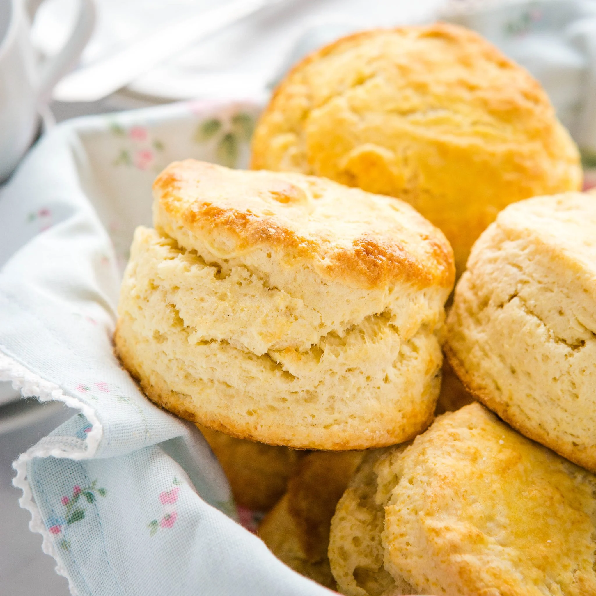

SCONES SCONES SCONES!
Ingredients:
350g + 10g for dusting - Flour
85g - Butter or Veg Fat
175ml - Milk Oat or Cows
3 Tbsp - Sugar
1 tsp - Bsking Powder
Method:
1 - Set oven to 180 C
2 - Rub butter into flour and baking powder until you have crums
3 - Stir in the sugar
4 - Stir in the milk adding a little at a time until a shaggy dough is fromed
5 - Turn dough onto a foured surface and kneed for 1 to 2 minites
6 - Roll out the dough to 2cm thick, then cut into circles using a glass or a cookie cutter
7 - Place the circles on to a baking sheet and bake for 10 mins
8 - Serve and enjoy! ;-)